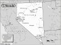

Nevada

Attention: If you use this or any of the AIRS lists in any state, please report any bad phone numbers or emails to the webmaster. This is the responsibility of all users, including you. Thank you!
Kevin
EMAIL: kevin.nellis@gmail.com
CROSSROADS: I-215 and Valle Verde
CITY: Henderson/Las Vegas
VW'S: 1976 Westy
COMMENTS: I have four kids and a hectic schedule. I will make time to help you, but
do know that my kids love company and will want to "befriend" you. I work
most week days from 7:30 to 5:00.
AVAILABLE: Whenever I am not working.. I'll help if I can.
I am familiar with: fuel injection
I CAN PROVIDE THE FOLLOWING SERVICES:
INTERNET ACCESS
TOOLS
TELEPHONE ACCESS
TRANSPORTATION HELP
CAMPING: 2 nights
SPARE ROOM: none
Favorite beer type: Thick and chewy
Dan Warrell
(Ignite58@aol.com)
CROSSROADS: Lake Tahoe, Reno: NV
Reno, 89509
PHONE: 775--827-6729
ONLY CALL IF EMERGENCY
VW'S: 1978 Bus, 1970 Bug,
COMMENTS:
I am a Student at the University of Nevada,Reno. Part time student, part time pizza
delivery,"full tim VW mechanic" My girlfriend owns the bug.
AVAILABLE: Whenever needed
familiar with: 36hp, Bastard40hp, 1500, 1600, 1776+, dual carbs, fuel injection, type4
engine
I CAN PROVIDE THE FOLLOWING SERVICES:
INTERNET ACCESS
TOOLS
TELEPHONE ACCESS
TRANSPORTATION HELP
MECHANICAL HELP
COFFEE/TALK
nights available: 2 nights
Favorite beer type: Anything cold
Dan
(vwfevr@aol.com)
CROSSROADS: I-15 and Cheyenne
Las Vegas, 89030
PHONE: 702-657-8753
VW'S: 1970 VW Type1
AVAILABLE: call between 2p.m. and 10p.m. seven days a week
familiar with: 1600
I CAN PROVIDE THE FOLLOWING SERVICES:
INTERNET ACCESS
TOOLS
TELEPHONE ACCESS
TRANSPORTATION HELP
MECHANICAL HELP
SPACE TO WORK ON BUS
PARTS AVAILABLE
COFFEE/TALK
CAMPING SPOT
Favorite beer type: Commercial brands
Barry Smith
(Squatchkopp@Yahoo.com)
CROSSROADS: Sahara and Lamb
Las Vegas, 89104
VW'S: 1974 Type 2
COMMENTS: I can give lots of advice as far as getting parts and service.
AVAILABLE: mon - fri 9-5
familiar with: 1200, 1300, 1500, 1600, type4 engine
I CAN PROVIDE THE FOLLOWING SERVICES:
INTERNET ACCESS
TRANSPORTATION HELP
MECHANICAL HELP
COFFEE/TALK
Favorite beer type: Rare brands
Scott Black
(scott@lapelpinz.com)
CROSSROADS: Craig Rd. and I- 15
North Las Vegas, 89031
PHONE: 888-629-4310
ONLY CALL IF EMERGENCY
VW'S: 66 Sundial Camper, 68 Ghia convertible
AVAILABLE: flexible
I CAN PROVIDE THE FOLLOWING SERVICES:
INTERNET ACCESS
TOOLS
TELEPHONE ACCESS
TRANSPORTATION HELP
SPACE TO WORK ON BUS
PARTS AVAILABLE
Richard S. Grove
EMAIL: renogrover@earthlink.net
CROSSROADS: Hwy 80 and 395
CITY: Reno, 89506
VW'S: 1985 VW GTI, 1969 VW Bug
COMMENTS: I'm Retired Navy, "Tinkerer" Big time especially
around VW's
AVAILABLE: Monday through Sunday "Day light hours"
I am familiar with: 1600, fuel injection
I CAN PROVIDE THE FOLLOWING SERVICES
TOOLS
TELEPHONE ACCESS
TRANSPORTATION HELP
MECHANICAL HELP
SPACE TO WORK ON BUS
SOME PARTS
COFFEE/TALK
CAMPING: none
SPARE ROOM: none
Favorite beer type: Commercial brands
smurf
EMAIL: cac_6166_at_hotmail_dot_com
CROSSROADS: I-80/I-395
CITY: Reno
ZIP CODE: 89503
PHONE: (775)750-2587
VW'S: 66 21 window / 66 double door walk thru panel
COMMENTS: I have a very small place, but I do have access to another facility
nearby(fully equipped).
AVAILABLE: varies, please call
I am familiar with: 1500, 1600
I CAN PROVIDE THE FOLLOWING SERVICES
INTERNET ACCESS
TOOLS
TELEPHONE ACCESS
MECHANICAL HELP
COFFEE/TALK
CAMPING: none
SPARE ROOM: 1 night
Favorite beer type: Anything cold
Daniel
EMAIL: armthewhales_at_hotmail_dot_com
CROSSROADS: I 80 & 395
CITY: Reno
ZIP CODE: 89502
VW'S: 82 Vanagon Westfalia AFC
COMMENTS: Traveller, Home mechanic
6 overhauls so far from 1600, 1678, 2000
past vw's: 69 Bug, 70 Westfalia
CURRENTLY ON ROAD TRIP BROKE DOWN IN DETROIT, MICH.
NO CURRENT RESIDENCE-----help!!
I am familiar with: 1600
I CAN PROVIDE THE FOLLOWING SERVICES
TOOLS
MECHANICAL HELP
COFFEE/TALK
Favorite beer type: Anything cold
Andy and Cindy Blair
EMAIL: andyblair_at_cox_dot_net
CROSSROADS: I-15 and Eastern
CITY: Las Vegas
ZIP CODE: 89123
PHONE: 702-250-3581
VW'S: 1995 Eurovan Camper
COMMENTS: We have a shared driveway that can be used for minor repairs only.
We have a guest bedroom that we often make available for nice travellers (see www.globalfreeloaders.com).
I'm mechanically inclined but my auto repair knowledge is limited.
AVAILABLE: I work from home, available most times.
I CAN PROVIDE THE FOLLOWING SERVICES
INTERNET ACCESS
TOOLS
TELEPHONE ACCESS
TRANSPORTATION HELP
MECHANICAL HELP
COFFEE/TALK
CAMPING: none
SPARE ROOM: 4 nights or more
Favorite beer type: Micro brands
Eric "EZ Gruv" Arnold
EMAIL: ezgruv_at_cox_dot_net
CROSSROADS: Nellis/Stewart
CITY: Las Vegas
ZIP CODE: 89110
PHONE: 702-501-7945
VW'S: 1977 Deluxe Westfalia
AVAILABLE: Weekdays after 5pm, Weekends anytime
I am familiar with: fuel injection, type4 engine
I CAN PROVIDE THE FOLLOWING SERVICES:
INTERNET ACCESS
TOOLS
MECHANICAL HELP
SPACE TO WORK ON BUS
CAMPING: 1 night
SPARE ROOM: none
Favorite beer type: Commercial brands
Ryan Sharrer
EMAIL: westyvw79_at_hotmail_dot_com
CROSSROADS: I-80/395
CITY: Reno
ZIP CODE: 89509
PHONE: Please email
VW'S: 1979 Deluxe Westfalia 1966 Type 1
AVAILABLE: Call anytime, I work 8-5 M-F, so can help after that.
I am familiar with: 1600, 1776+, fuel injection, type4 engine
I CAN PROVIDE THE FOLLOWING SERVICES:
INTERNET ACCESS
TOOLS
TELEPHONE ACCESS
TRANSPORTATION HELP
MECHANICAL HELP
SOME PARTS
COFFEE/TALK
CAMPING: 2 nights
SPARE ROOM: 2 nights
Favorite beer type: Anything cold
Jason and Tasha
EMAIL: info_at_slogoinvws_dot_com
CROSSROADS: 395
CITY: Carson City
ZIP CODE: 89701
PHONE: 775-885-8960
VW'S: 67 sundial, 67 bug, 64 notchback, 68 squareback, 63 manx,73 thing ,70
Baja,and 64 Ghia
COMMENTS: Air cooled VW's of all kinds are a love and passion of my wife ,and
mine!!! I decided to put my name on this list because a guy from back east broke
a tranny in my town, and some one off of this list gave him my #. I found him a
tranny , and he was on his way in a day. What a great concept, maybe someone
will do the same for me one day!!!!
AVAILABLE: 8:00am to 10:00 pm 7 Days a week
I am familiar with: 25hp, 36hp, Bastard40hp, 1200, 1300, 1500, 1600, 1776+, dual
carbs, conversions
I CAN PROVIDE THE FOLLOWING SERVICES
TOOLS
TELEPHONE ACCESS
TRANSPORTATION HELP
MECHANICAL HELP
SPACE TO WORK ON BUS
SOME PARTS
COFFEE/TALK
CAMPING: 2 nights
SPARE ROOM: none
Favorite beer type: Micro brands
Dave (Crazy Dave's Motorsports)
EMAIL: hanksterri_at_hotmail_dot_com
CROSSROADS: U.S. 395 and Interstate 80
CITY: Afew miles North of Reno in a nice little place named Lemmon Valley
ZIP CODE: 89506
PHONE: (775)750-3904 and leave a message if you cant get ahold of me.
VW'S: I currently have 26 Air Cooled cars, and it really changes every day. I
have Bugs, Busses, Ghia's, Notchbacks, Things, and a few Dunebuggies
COMMENTS: I have a 2,600 foot Garage for VW's, many many parts and many tools
and equipment. If I dont have it, cant fix it, cant replace it, cant make it, or
dont know where to get it, YOU DONT NEED IT. Call me for parts, pieces,
assistance, or whatever. I love the Mentally Sick Addiction to these crazy
little cars that I have made my life. Can help anytime, so call and we will get
you going again.
AVAILABLE: Almost anytime, I work crazy hours that change alot. So call me and I
can help in a few hours, if not immediately.
I am familiar with: 36hp, Bastard40hp, 1200, 1300, 1500, 1600, 1776+, dual carbs,
fuel injection, diesel, conversions
I CAN PROVIDE THE FOLLOWING SERVICES
INTERNET ACCESS
TOOLS
TELEPHONE ACCESS
TRANSPORTATION HELP
MECHANICAL HELP
SPACE TO WORK ON BUS
STORAGE SPACE
SOME PARTS
COFFEE/TALK
CAMPING: 2 nights
SPARE ROOM: none
Favorite beer type: Anything cold
Tom V
EMAIL: bugracer99_at_juno_dot_com
CROSSROADS: Hwy 95A (Reno to Vegas route)
CITY: Yerington
ZIP CODE: 89447
PHONE: 775 -721-1038
VW'S: Baja's, Manx buggy, 65 bug
COMMENTS: Retired body man, only tinker with motors but have a garage (AC &
heated!) well stocked w/VW tools, mig welder, compressor & quite a few miss.
VW parts.
AVAILABLE: Home most all the time unless on a trip somewhere.
I am familiar with: 1500, 1600, 1776+, dual carbs
I CAN PROVIDE THE FOLLOWING SERVICES
INTERNET ACCESS
TOOLS
TELEPHONE ACCESS
TRANSPORTATION HELP
MECHANICAL HELP
SPACE TO WORK ON BUS
SOME PARTS
COFFEE/TALK
CAMPING: 2 nights
SPARE ROOM: 2 nights
Favorite beer type: Commercial brands
Ray Wolfe
EMAIL: ray_at_aerocheck_dot_com
CROSSROADS: I-215 & Rainbow
CITY: Las Vegas, 89178 PHONE: 702-580-0193
VW'S: 1960 Microbus
AVAILABLE: Varies wildly. Call anytime between 10AM and 10PM
I am familiar with: 1500/1600
I CAN PROVIDE THE FOLLOWING SERVICES
INTERNET ACCESS
TOOLS
TELEPHONE ACCESS
TRANSPORTATION HELP
MECHANICAL HELP
CAMPING: none SPARE ROOM: none
Favorite beer type: I don't drink
Greg
EMAIL: 6volt65_at_embarqmail_dot_com
CROSSROADS: Town Center & West Charleston
CITY: Las Vegas, 89144 PHONE: 702-510-3777
VW'S: 65 Beetle, 60 Singlecab
AVAILABLE: 7 days, 6am - till
I am familiar with: 1200/1300, 1500/1600, 1776+, dual carbs
I CAN PROVIDE THE FOLLOWING SERVICES
INTERNET ACCESS
TOOLS
TELEPHONE ACCESS
TRANSPORTATION HELP
MECHANICAL HELP
SPACE TO WORK ON BUS
SOME PARTS/CAN GET THEM
COFFEE/TALK
CAMPING: none SPARE ROOM: none
Favorite beer type: Anything cold
george
EMAIL: hackmac87_at_aim_dot_com
CROSSROADS: sunset and mountain vista
CITY: henderson ZIP CODE: 89014
PHONE: 702-544-1761
VW'S: 1971 bus
COMMENTS: im a mechanic. i dont mind helping if i can. i cant drive too far to
help but around town isnt an issue.
AVAILABLE: dont call after 11pm or before 8am
I am familiar with: 25/36hp, Bastard40hp, 1200/1300, 1500/1600, 1776+, dual
carbs, fuel injection, type4 engine, wasserboxer, diesel, conversions
I CAN PROVIDE THE FOLLOWING SERVICES
INTERNET ACCESS
TOOLS
TELEPHONE ACCESS
TRANSPORTATION HELP
MECHANICAL HELP
SPACE TO WORK ON BUS
CAMPING: none SPARE ROOM: none
Favorite beer type: Beer is for wimps!
{kind=link}